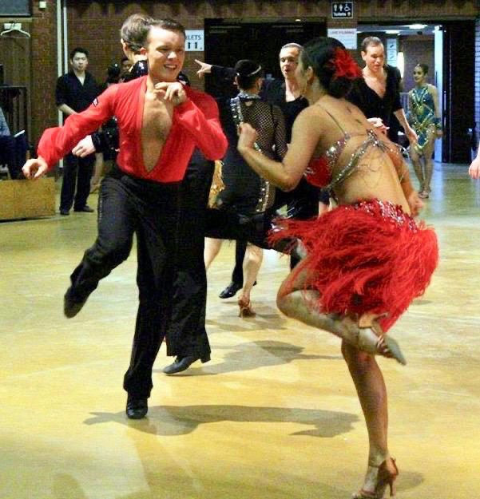
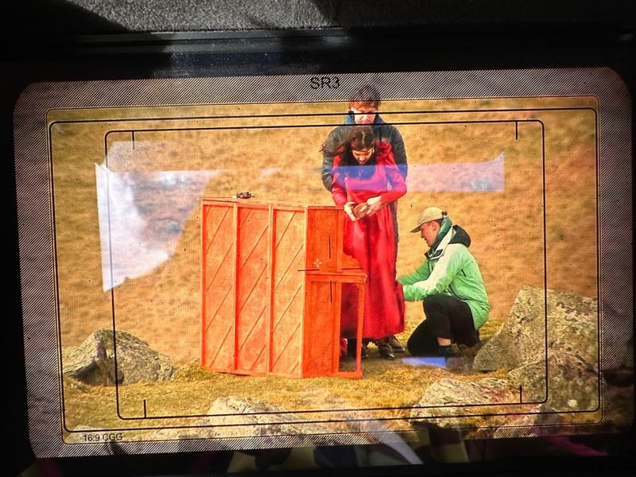

Bio
I grew up a theatre kid. National Youth Theatre, summers at the Edinburgh Fringe, dancing down the school corridors. At Cambridge I read philosophy, volunteered with a homelessness charity and became an award-winning ballroom dancer.

Then I spent seven years in tech, mostly doing one thing: taking bold, experimental, creative ideas and persuading people to back them.
The biggest was Tonk, an applied cryptography lab I cofounded to give people back control of their digital lives. On the strength of a pitch deck and some prototypes, I raised $3.5m from world-class investors, hired a brilliant team, and spoke at conferences from Lisbon to Istanbul.
Before that I worked on products used by millions and founded a climate publication featured in the Telegraph.

In the summer of 2025 I was flying back to London from an investor retreat in Silicon Valley and had an epiphany. I wanted to return to the arts, my first love. When the time was right I handed Tonk to my cofounder. I took a gap year, caught up on my Letterboxd, pitched in with friends’ projects, produced a music video and helped finance a short film.
I am obsessed with creative packaging - bringing together the right story, talent and money, and finding a film its audience.

Old writing
→ my manifesto to make the tech industry suck less
→ 2019 diary entry: On Entreprenerds